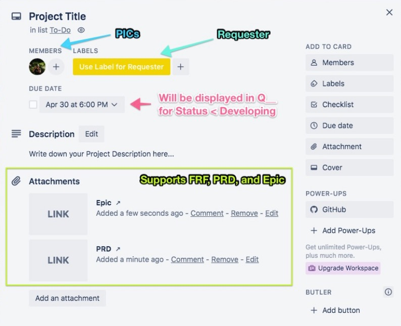

<div class="row no-gutters container">
  <div class="column center-items">
    <div class="content">
      <h1>What is Trello2Table?</h1>
      <hr />
      <p>
        Trello2Table is a mini web-app designed to convert a specifically configured Trello Board
        into a neatly organized table summary. It works by mapping specific fields in each Trello
        Card into a column in the table.
      </p>
      <br />
      <h2>Getting Started</h2>
      <hr />
      <h3>Trello Board Configuration</h3>
      <p>
        The Trello Board has to be configured as a Kanban Board. The Board should at least have the
        following lists/statuses:
      </p>
      <ul>
        <li>Backlog</li>
        <li>Feasibility Studies</li>
        <li>PRD</li>
        <li>Technical Design</li>
        <li>Developing</li>
        <li>Testing</li>
        <li>UAT</li>
        <li>Staging</li>
        <li>Live</li>
      </ul>
      <h3>Trello Card Template</h3>
      <p>
        Each Trello Card has to follow a specific template for its content to be parsed correctly by
        Trello2Table. The template is as shown in the image below:
      </p>
      <p></p>
      <br />
      <h2>Using Trello2Table</h2>
      <hr />
      <h3>Viewing Kanban as Table</h3>
      <p>
        In order to view the Trello Kanban Board in Trello2Table, head to "Show menu" → "More" →
        "Print and export" → "Export as JSON". Save the displayed JSON as a text (.txt) file, and
        upload it into Trello2Table. The table rendered comes with built-in sorting and filtering
        functionalities.
      </p>
      <h3>Exporting Table to Semicolon-Separated CSV</h3>
      <p>
        The table displayed can be exported into a Semicolon-Separated Values. To do this, click on
        the "Export as Semicolon-Separated Values" button, and a .csv file will be downloaded to
        desktop. Import this file using Microsoft Excel or Google Sheets, and the same table is now
        present in a local sheet format!
      </p>
      <br />
      <h2>Support, Bug Reporting, and Feature Request</h2>
      <hr />
      <p>
        For all of the above, please open a new issue ticket in
        <a href="https://github.com/stevahnes/trello-to-table/issues" target="_blank">GitHub</a>.
      </p>
    </div>
  </div>
</div>
